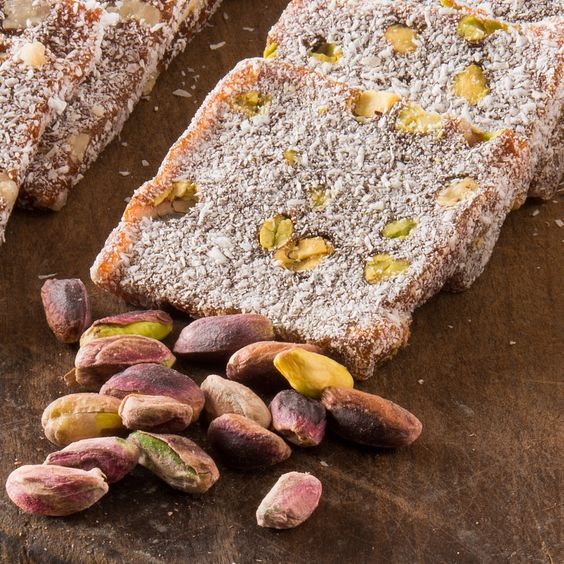
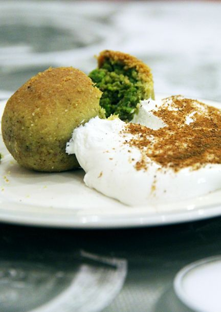

Back
Beverage
Food

Cezerye
Ingredients:
2 large purple turnips
2 tablespoons of salt
2 tablespoons of vinegar (optional)
2 tablespoons of pomegranate molasses (optional)
1/4 cup of lemon juice
1 teaspoon of sugar (optional)
1-2 cloves of garlic (optional)
Onion (optional)
Carrot (optional)
Whole black peppercorns (optional)
Dried thyme (optional)
Instructions:
Wash and peel the turnips, then slice them into rounds.
Place the sliced turnips in a container.
Add salt, vinegar, pomegranate molasses (if using), lemon juice, and optionally sugar.
Add water to cover the turnips and mix the ingredients well.
Add optional ingredients such as garlic, onion, carrot, whole black peppercorns, and dried thyme.
Pour the mixture into a jar or glass container.
Seal the lid tightly and let it sit at room temperature for 2-3 days. During this time, the turnips will undergo fermentation.
Once the fermentation period is over, your şalgam will be ready.
You can optionally add garlic, dried thyme, or whole black peppercorns while bottling the şalgam.
After cooling, store the şalgam in the refrigerator.
When serving, you can dilute the şalgam with ice or cold water according to your preference.

Kerebiç
For the Dough:
250 grams of butter (softened at room temperature)
1/2 cup vegetable oil
1/2 cup yogurt
1 egg (yolk for the dough, white for brushing)
1 tablespoon vinegar or lemon juice
1 teaspoon baking powder
1 teaspoon salt
All-purpose flour as needed
For the Filling:
2 cups finely chopped walnuts
1/2 cup granulated sugar
1 teaspoon cinnamon
For the Topping:
1 egg white
1 tablespoon milk
Instructions:
Mix the dough ingredients and knead until you have a soft dough. Gradually add flour to achieve a smooth consistency.
Divide the dough into 8-10 pieces and shape them into small balls. Cover the dough balls and let them rest.
For the filling, combine the chopped walnuts, granulated sugar, and cinnamon.
Roll out each dough ball using a rolling pin. You can shape them into rounds or squares.
Place the walnut filling in the center of each rolled-out dough and shape them by folding and sealing the edges.
Arrange the shaped kerebiç on a baking sheet lined with parchment paper.
Brush the tops of the kerebiç with a mixture of egg white and milk.
Bake in a preheated oven at 180°C (350°F) until the tops are golden brown.
Once out of the oven, let the kerebiç cool on a rack.
Once cooled, they're ready to be served.